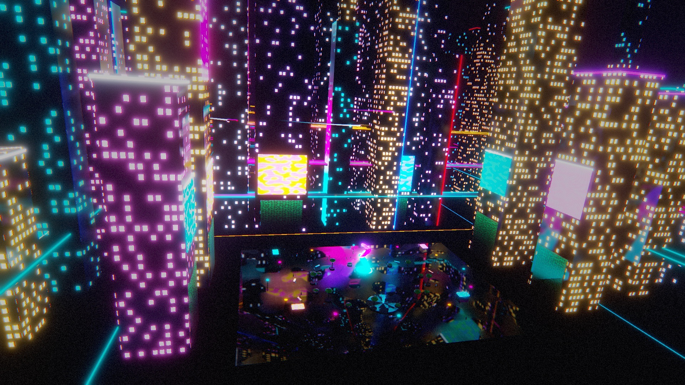
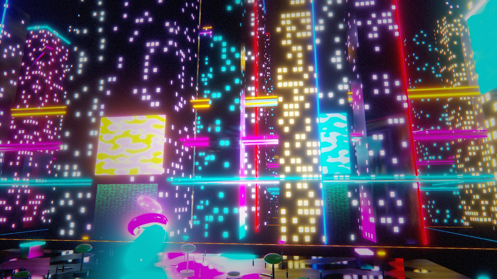
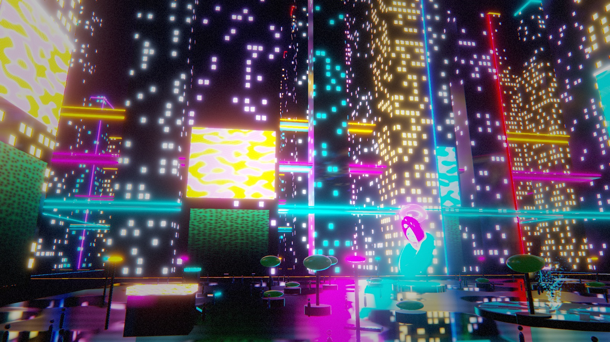

Showcase
Scenes made with GameCraft. If you have made something, open an issue and we may feature it here.
Neon City
A night city with 189 towers, elevated roads, 44 flying cars and 90 pedestrians, built from primitive shapes, four Shader Graph materials and three C# scripts. The scene was assembled in the editor by a script using live build sessions, one undoable step per object.



How it was made
Materials
The building windows come from a single Shader Graph that divides each wall into floors and bays using its world position, then lights a random selection of them. The billboards use an animated graph with moving noise and scan lines. The plaza floor varies its smoothness to form puddles.
Scripts
Three C# scripts written against the UnityEngine API move the cars along their lanes, let pedestrians wander the plaza, and drift the camera slowly through the scene.
Build it yourself
The generator script is in the repository. Point the editor at its output folder and the scene builds in front of you.
python3 tools/demo/neon_city.py ~/NeonCity
GAMECRAFT_LIVE_DIR=~/NeonCity gamecraft